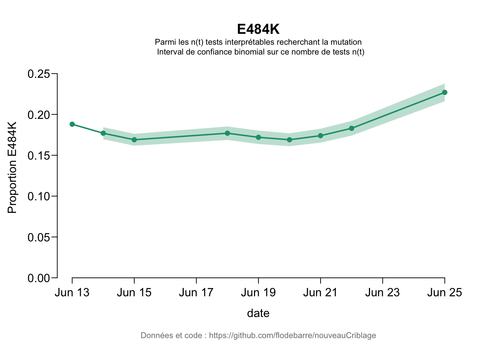
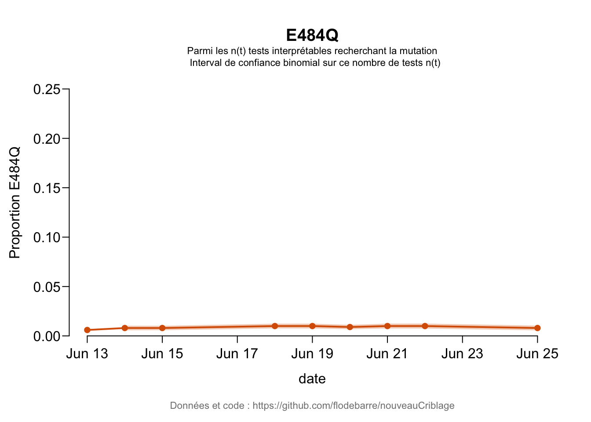
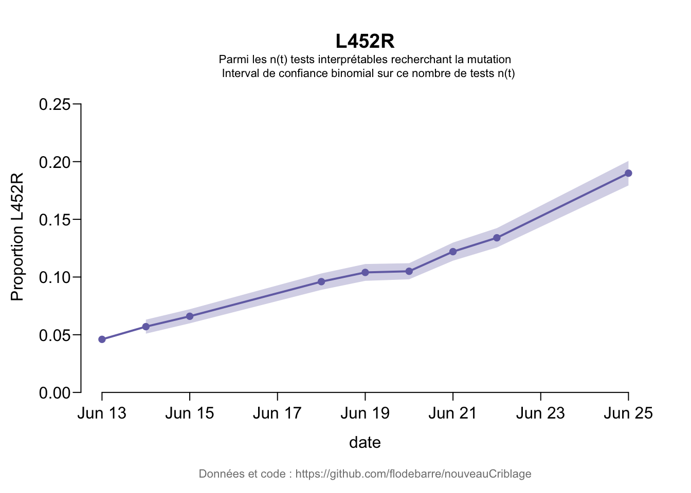

dat <- read.csv("../nouveauCriblage.csv", stringsAsFactors = FALSE)Compute numbers of interpretable tests
dat$nbTestInterp_E484K <- round(dat$nbE484K / (dat$pE484K/100))
dat$nbTestInterp_E484Q <- round(dat$nbE484Q / (dat$pE484Q/100))
dat$nbTestInterp_L452R <- round(dat$nbL452R / (dat$pL452R/100))
dat[-13]## location dateBegin dateEnd nbCriblage propTests nbE484K pE484K nbE484Q
## 1 France 2021-06-19 2021-06-25 6980 41.1 1301 22.7 43
## 2 France 2021-06-16 2021-06-22 8621 44.1 1312 18.3 60
## 3 France 2021-06-15 2021-06-21 9033 43.5 1315 17.4 63
## 4 France 2021-06-14 2021-06-20 10224 45.2 1462 16.9 67
## 5 France 2021-06-13 2021-06-19 9491 41.8 1386 17.2 64
## 6 France 2021-06-12 2021-06-18 9671 40.9 1453 17.7 66
## 7 France 2021-06-09 2021-06-15 11918 39.8 1716 16.9 50
## 8 France 2021-06-08 2021-06-14 12105 37.1 1842 17.7 45
## 9 France 2021-06-07 2021-06-13 13862 37.5 NA 18.8 NA
## pE484Q nbL452R pL452R nbE484KandL452R
## 1 0.8 993 19.0 NA
## 2 1.0 851 13.4 NA
## 3 1.0 815 12.2 NA
## 4 0.9 782 10.5 NA
## 5 1.0 702 10.4 NA
## 6 1.0 635 9.6 NA
## 7 0.8 418 6.6 NA
## 8 0.8 320 5.7 NA
## 9 0.6 NA 4.6 NA
## source
## 1 https://www.santepubliquefrance.fr/dossiers/coronavirus-covid-19/coronavirus-circulation-des-variants-du-sars-cov-2#block-270756
## 2 http://web.archive.org/web/20210626055250/https://www.santepubliquefrance.fr/dossiers/coronavirus-covid-19/coronavirus-circulation-des-variants-du-sars-cov-2
## 3 http://web.archive.org/web/20210624215104/https://www.santepubliquefrance.fr/dossiers/coronavirus-covid-19/coronavirus-circulation-des-variants-du-sars-cov-2
## 4 http://web.archive.org/web/20210624122027/https://www.santepubliquefrance.fr/dossiers/coronavirus-covid-19/coronavirus-circulation-des-variants-du-sars-cov-2
## 5 http://web.archive.org/web/20210622210727/https://www.santepubliquefrance.fr/dossiers/coronavirus-covid-19/coronavirus-circulation-des-variants-du-sars-cov-2
## 6 http://web.archive.org/web/20210622173718/https://www.santepubliquefrance.fr/dossiers/coronavirus-covid-19/coronavirus-circulation-des-variants-du-sars-cov-2
## 7 http://web.archive.org/web/20210621100511/https://www.santepubliquefrance.fr/dossiers/coronavirus-covid-19/coronavirus-circulation-des-variants-du-sars-cov-2
## 8 http://web.archive.org/web/20210618012508/https://www.santepubliquefrance.fr/dossiers/coronavirus-covid-19/coronavirus-chiffres-cles-et-evolution-de-la-covid-19-en-france-et-dans-le-monde
## 9 https://www.santepubliquefrance.fr/content/download/353647/3067733
## notes nbTestInterp_E484K nbTestInterp_E484Q nbTestInterp_L452R
## 1 5731 5375 5226
## 2 7169 6000 6351
## 3 7557 6300 6680
## 4 8651 7444 7448
## 5 8058 6400 6750
## 6 8209 6600 6615
## 7 10154 6250 6333
## 8 10407 5625 5614
## 9 page12 NA NA NAlibrary(RColorBrewer)
colMut <- brewer.pal(n = 8, name = "Dark2")muts <- c("E484K", "E484Q", "L452R")
ymax <- 0.27
for(i in seq_along(muts)){
mutation <- muts[i]
ntot <- dat[, paste0("nbTestInterp_", mutation)]
p <- dat[, paste0("p", mutation)]/100
t <- dat$dateEnd
# Computation of the confidence interval
deltaItv <- 1.96 * sqrt(p * (1-p) / ntot)
keepPts <- !is.na(deltaItv)
# Remove points for which the itv cannot be computed
deltaItv <- deltaItv[keepPts]
pp <- p[keepPts]
maincol <- colMut[i]
par(las = 1, mgp = c(2.75, 0.5, 0), tck = -0.025)
# ymax <- 1.1*max(pp+deltaItv)
plot(base::as.Date(t), p, ylim = c(0, ymax), frame.plot = FALSE, yaxs = "i",
xlab = "", ylab = paste0("Proportion ", mutation), type = "o", pch = 16, col = maincol, lwd = 2, main = mutation)
mtext("date", side = 1, line = 2)
mtext("Parmi les n(t) tests interprétables recherchant la mutation
Interval de confiance binomial sur ce nombre de tests n(t)", side = 3, cex = 0.7, adj = 0.5, line = 0)
xx <- base::as.Date(t)[keepPts]
polygon(x = c(xx, rev(xx), xx[1]), y = c(pp + deltaItv, rev(pp - deltaItv), (pp + deltaItv)[1]), border = NA, col = adjustcolor(maincol, alpha.f = 0.3))
mtext("Données et code : https://github.com/flodebarre/nouveauCriblage", side = 1, line = 3.5, cex = 0.7, col = gray(0.5))
}